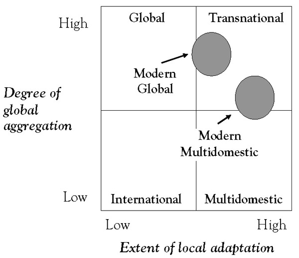

Previous chapters focused on the challenges associated with globalizing the first three components of the business model framework—the value proposition, market choices, and the value-chain infrastructure. This chapter looks at globalizing the fourth component—the company’s management model—which summarizes its choices about a suitable global organizational structure and decision-making framework.
The judicious globalization of a company’s management model is critical to unlocking the potential for global competitive advantage. But globalizing a company’s management model can be ruinous if conditions are not right or the process for doing so is flawed. So key questions include when, and to what extent, should a company globalize its decision-making processes and its organizational and control structure; what are some of the key implementation challenges; and how does a company get started?
This chapter is organized in two parts. The first discusses a key “soft” dimension of globalizing a company’s management model—creating and embedding a global mind-set—a prerequisite for global success. The second part deals with the “hard” dimensions of creating a global architecture: choosing a suitable organizational structure and streamlining global decision-making processes.
Globalizing a company’s management modelA model that summarizes a firm’s choices about its global organizational structure and decision-making framework. is hard. As firms increase their revenue by expanding into more countries and by extending the lives of existing products by bringing them into emerging markets, costs can often be reduced through global sourcing and better asset utilization. But capitalizing on such profit opportunities is hard because every opportunity for increased globalization has a cost and carries a danger of actually reducing profit. For example, the company’s customer focus may blur as excessive standardization makes products appeal to the lowest common denominator, alienating key customer segments and causing market share to fall. Or a wrong globalization move makes innovation slow down and causes price competition to sharpen.
The best executives in a worldwide firm are often country managers who are protective of “their” markets and value delivery networks. Globalization shrinks their power. Some rise to new heights within the organization by taking extra global responsibilities; some leave. Many fight globalization, making it tough for the CEO. Sometimes they win and the CEO loses. Overcoming organizational resistance is therefore key to success.
In April of 2002, Japan’s leading mobile operator, NTT DoCoMo, Inc., announced it would write down the reduced value of its investment in AT&T Wireless Services, Inc., a move expected to contribute to an extraordinary loss of about 1 trillion yen ($7.53 billion) for the fiscal year. And when the full extent of the write-downs of all its recent European, U.S., and Asian investments was realized, the bill for the ambitious globalization strategy pursued by Japan’s—and Asia’s—most valuable company exceeded $10 billion.
NTT DoCoMo clearly had the cash flow from its domestic business to avoid, by a long way, the high-profile fate of now bankrupt Swissair. However, the two companies’ approaches to global strategy provide interesting parallels and lessons for other international players in all industries. NTT DoCoMo and the former Swiss flag carrier enjoyed strong economic success built around a former monopoly and highly protected incumbent positions in their home markets. NTT DoCoMo was the clear leader in the Japanese mobile market, with a 60% market share that drove an annual operating cash flow of more than $10 billion. Swissair’s dominant carrier position delivered financial performance that was similarly blue chip.
But a strong domestic market position and excess cash flow do not guarantee success abroad. In fact, without a quite sophisticated understanding of the uniqueness of its domestic situation, a strong domestic position could conceal some of the risks of a global strategy. The first lesson is one of microeconomics: understand what drives superior economic performance in a particular business and do not take domestic success for granted. Both the airline and the telecommunications businesses are highly regulated, technology-driven, and capital-intensive industries with high fixed and very low marginal costs (per airline seat or per mobile-call minute). Rapid changes in regulation and technology are changing some of the rules of the game but not the basic economics of either of these businesses.
In the airline industry, cost advantages are driven by an airline’s dominance in airport hubs and on specific routes. The airline with the most flights in and out of a specific airport generates lower unit costs per flight and per passenger than competitors. The airline with the highest market share and flight frequency on a given route typically has lower costs per seat, higher utilization, and superior pricing power. In the mobile industry, the significant fixed-cost components of the business (networks, product development, and brand advertising and promotion) provide unit cost advantages to the national market leader compared with its followers.
The second lesson from NTT DoCoMo and Swissair’s experience is to have a clear view of the real economic boundaries of your business—is it a global business or, rather, a multilocal or regional one? Sitting on increasing cash balances, both DoCoMo and Swissair saw a high volume of merger and acquisition activity. They concluded a wave of “globalization” was underway in their industries and that they could not afford to be left out. The result: they developed growth aspirations beyond their national boundaries.
But while regulatory changes allowed increased foreign shareholdings in telecommunications and airlines opened up new international investment opportunities, they have not changed the laws of economics. Despite regulatory changes, the economics of the mobile-phone industry remain primarily national or regional in nature. This implies that it is better to be a market leader in one country than a follower in two countries. Similarly, regulatory changes in traditional, bilateral air-transport agreements have shifted barriers to entry and hence increased competition and reduced pricing power in the airline industry, but they have not changed its fundamental economics. All successful airline mergers have been driven around building or expanding hub or route dominance, not around building sheer, absolute scale in terms of either aircraft or destinations served
When both NTT DoCoMo and Swissair convinced themselves they needed to expand beyond domestic boundaries to survive, the race to fulfill their global aspirations seems to have resulted in a set of investments more focused on the number of flags on a boardroom map rather than on these basic economics driving superior profitability in their industries. The risks of these two aggressive expansion strategies were further compounded by not having control over most of their international investments. This suggests a third lesson: move to management control if you are serious about capturing acquisition synergies.
During the mid to late 1990s, Swissair kept its investment bankers busy with a nonstop string of deals. The company adopted an explicit “hunter strategy,” which led to acquisitions of noncontrolling minority stakes in a string of strategically challenged nonincumbent carriers: German charter carrier LTU, the French airlines AOM-Air Liberte and Air Littoral, and Italy’s Volare Airlines and Air Europe. In addition, Swissair acquired stakes in Polish flag carrier LOT, Belgium’s Sabena, and South African Airways.
Without majority control, there was very limited scope for Swissair management to drive the economic benefits from these airline shareholdings through route consolidation, aircraft fleet rationalization and purchasing benefits. In addition, there was no ability to take corrective action when operational or financial performance deteriorated.
Similarly, in short order, DoCoMo accumulated direct or indirect stakes in nine mobile operators—most for cash—at the peak of the telecom bubble. But this acquisition spree resulted in equity stakes in only two market leaders, and these were in relatively minor geographic markets: KPN Mobile domestically in the Netherlands and Hutchison in Hong Kong. All the others were lesser players. DoCoMo acquired stakes in the No. 3 U.S. player, AT&T Wireless; Taiwan’s No. 4 player, KG Telecom; the United Kingdom’s No. 5 player, Hutchison U.K., and distant followers KPN Orange in Belgium and E-Plus in Germany. Worse still, all these investments were minority stakes and so gave DoCoMo limited ability to exert control over critical strategic and operational issues at these operators.
A common challenge that many corporations encounter as they move to globalize their operations can be summed up in one word: mind-set. Successful global expansion requires corporate leaders who think proactively, who sense and foresee emerging trends, and who act upon them in a deliberate, timely manner. To accomplish this, they need a global mind-set and an enthusiasm to embrace new challenges, diversity, and a measure of ambiguity. Simply having the right product and technology is not sufficient; it is the caliber of a company’s global leadership that that makes the difference.
Herbert Paul defines a mind-setThe set of deeply held internal mental images and assumptions, which individuals develop through a continuous process of learning from experience. as “a set of deeply held internal mental images and assumptions, which individuals develop through a continuous process of learning from experience.”Paul (2000). These images exist in the subconscious and determine how an individual perceives a specific situation and his or her reaction to it. In a global context, a global mind-setThe ability to avoid the simplicity of assuming all cultures are the same, and at the same time, not being paralyzed by the complexity of the differences. is “the ability to avoid the simplicity of assuming all cultures are the same, and at the same time, not being paralyzed by the complexity of the differences.”Paul (2000). Thus, rather than being frustrated and intimidated by cultural differences, an individual with a global mind-set enjoys them and seeks them out because they are fascinated by them and understand they present unique business opportunities.
The concept of a mind-set does not just apply to individuals: it can be logically extended to organizations as the aggregated mind-set of all of its members. Naturally, at the organizational level, mind-set also reflects how its members interact as well as such issues as the distribution of power within the organization. Certain individuals, depending on their position in the organizational hierarchy, will have a stronger impact on the company’s mind-set than others. In fact, the personal mind-set of the CEO is sometimes the single most important factor in shaping the organization’s mind-set.
A corporate mind-setThe aggregated mind-set of all of the firm’s members. shapes the perceptions of individual and corporate challenges, opportunities, capabilities, and limitations. It also frames how goals and expectations are set and therefore has a significant impact on what strategies are considered and ultimately selected and how they are implemented. Recognizing the diversity of local markets and seeing them as a source of opportunity and strength, while at the same time pushing for strategic consistency across countries, lies at the heart of global strategy development. To become truly global, therefore, requires a company to develop two key capabilities. First, the company must have the capability to enter any market in the world it wishes to compete in. This requires that the company constantly looks for market opportunities worldwide, processes information on a global basis, and is respected as a real or potential threat by competitors, even in countries or markets it has not yet entered. Second, the company must have the capability to leverage its worldwide resources. Making a switch to a lower cost position by globalizing the supply chain is a good example. Leveraging a company’s global know-how is another.
To understand the importance of a corporate mind-set to the development of these capabilities, consider two often quoted corporate mantras: “think global and act local” and its opposite, “think local and act global.” The “think global and act local” mind-setThe assumption that a powerful brand name with a standard product, package, and advertising concept serves as a dominating platform across global markets. is indicative of a global approach in which management operates under the assumption that a powerful brand name with a standard product, package, and advertising concept serves as a platform to conquer global markets. The starting point is a globalization strategy focused on standard products, optimal global sourcing, and the ability to react globally to competitors’ moves. While sometimes effective, this approach can discourage diversity, and it puts a lot of emphasis on uniformity. Contrast this with a “think local and act global” mind-setThe assumption that global expansion is best served by a firm adopting a bottom-up approach in adapting its products, services, and practices to local needs and preferences., which is based on the assumption that global expansion is best served by adaptation to local needs and preferences. In this mind-set, diversity is looked upon as a source of opportunity, whereas strategic cohesion plays a secondary role. Such a “bottom-up” approach can offer greater possibilities for revenue generation, particularly for companies wanting to rapidly grow abroad. However, it may require greater investment in infrastructure necessary to serve each market and can produce global strategic inconsistency and inefficiencies.
C. K. Prahalad and Kenneth Lieberthal first exposed the Western (which they refer to as “imperialist”) bias that many multinationals have brought to their global strategies, particularly in developing countries. They note that they would perform better—and learn more—if they more effectively tailored their operations to the unique conditions of emerging markets. Arguing that literally hundreds of millions of people in China, India, Indonesia, and Brazil are ready to enter the marketplace, they observe that multinational companies typically target only a tiny segment of affluent buyers in these emerging markets: those who most resemble Westerners. This kind of myopia—thinking of developing countries simply as new places to sell old products—is not only shortsighted and the direct result of a Western “imperialist” mind-setThe tendency of multinational firms to target only those affluent buyers in emerging markets who most resemble Western consumers.; it causes these companies to miss out on much larger market opportunities further down the socioeconomic pyramid that are often seized by local competitors.Prahalad and Lieberthal (1998).
Companies with a genuine global mind-set do not assume that they can be successful by simply exporting their current business models around the globe. Citicorp, for example, knew it could not profitably serve a client in Beijing or Delhi whose net wealth is less than $5,000 with its U.S. business model and attendant cost structure. It therefore had to create a new business model—which meant rethinking every element of its cost structure—to serve average citizens in China and India.
What is more, as we have seen, the innovation required to serve the large tier-two and tier-three segments in emerging markets has the potential to make them more competitive in their traditional markets and therefore in all markets. The same business model that Citicorp developed for emerging markets, for example, was found to have application to inner-city markets in the United States and elsewhere in the developed world.
To become truly global, multinational companies will also increasingly have to look to emerging markets for talent. India is already recognized as a source of technical talent in engineering, sciences, and software, as well as in some aspects of management. High-tech companies recruit in India not only for the Indian market but also for the global market. China, Brazil, and Russia will surely be next. Philips, the Dutch electronics giant, is downsizing in Europe and already employs more Chinese than Dutch workers. Nearly half of the revenues for companies such as Coca-Cola, Procter & Gamble (P&G), Lucent, Boeing, and GE come from Asia, or will in the near future.
As corporate globalization advances, the composition of senior management will also begin to reflect the importance of the BRIC (Brazil, Russia, India, and China) countries and other emerging markets. At present, with a few exceptions, such as Citicorp and Unilever, executive suites are still filled with nationals from the company’s home country. As the senior managements for multinationals become more diverse, however, decision-making criteria and processes, attitudes toward ethics, and corporate responsibility, risk taking, and team building all will likely change, reflecting the slow but persistent shift in the center of gravity in many multinational companies toward Asia. This will make the clear articulation of a company’s core values and expected behaviors even more important than it is today. It will also increase the need for a single company culture as more and more people from different cultures have to work together.
What factors shape a corporation’s mind-set? Can they be managed? Given the importance of mind-set to a company’s global outlook and prospects, these are important questions. Paul cites four primary factors: (1) top management’s view of the world; (2) the company’s strategic and administrative heritage; (3) the company’s dominant organizational dimension; and (4) industry-specific forces driving or limiting globalization.Paul (2000).
The composition of a company’s top management and the way it exercises power both have an important influence on the corporate mind-set. The emergence of a visionary leader can be a major catalyst in breaking down existing geographic and competitive boundaries. Good examples are Jack Welch at General Electric or Louis Gerstner at IBM, who both played a dominant role in propelling their companies to positions of global leadership. In contrast, leaders with a parochial, predominantly ethnocentric vision are more likely to concentrate on the home market and not be very interested in international growth.
The second factor is a company’s “administrative heritageA firm’s strategic and organizational history, management philosophies, core competencies, and culture.”—a company’s strategic and organizational history, including the configuration of assets the company has acquired over the years, the evolution of its organizational structure, the strategies and management philosophies the company has pursued, its core competencies, and its corporate culture. In most companies, these elements evolve over a number of years and increasingly “define” the organization. As a consequence, changing one or more of these key tangible and intangible elements of a company is an enormous challenge and therefore a constraint on its global strategic options. For example, many traditional multinationals such as Philips and Unilever created freestanding subsidiaries with a high degree of autonomy and limited strategic coordination in many of the countries and markets where they chose to compete. Companies with such a history may encounter greater resistance in introducing a more global mind-set and related strategies than companies such as Coca-Cola, which have predominantly operated with a more centralized approach.
The type of organizational structure a company has chosen—discussed more fully in the next section—is also a key determinant of a corporate mind-set. In a strongly product-oriented structure, management is more likely to think globally as the entire information infrastructure is geared toward collecting and processing product data on a worldwide basis. Compare this to an organization with a focus on countries, areas, or regions—the mind-set of managers tends to be more local. Here, the information infrastructure is primarily oriented toward local and regional needs. It follows that in a matrix structure based on product as well as geographic dimensions, the mind-set of management is expected to reflect both global and local perspectives.
Industry factorsThose opportunities for economies of scale and scope, global sourcing, and lower costs that push firms toward a global efficiency mind-set. such as opportunities for economies of scale and scope, global sourcing, and lower transportation and communication costs push companies toward a global efficiency mind-set. Stronger global competition, the need to enter new markets, and the globalization of important customers pull in the same direction. Similarly, the trend toward a more homogeneous demand, particularly for products in fast-moving consumer goods industries, and more uniform technical standards for many industrial products, encourage a more global outlook. Another set of industry drivers, however, works in the opposite direction and calls for strategies with a high degree of local responsiveness. Such drivers include strong local competition in important markets and the existence of cultural differences, making the transfer of globally standardized concepts less attractive. Issues such as protectionism, trade barriers, and volatile exchange rates may also force a national business approach. All these forces work together and help create the conditions that shape the global mind-set of a company.
Thus, to create the right global mind-set, management must understand the different, often opposite, environmental forces that shape it. At the corporate level, managers focusing on global competitive strategies tend to emphasize increased cross-country or cross-region coordination and more centralized, standardized approaches to strategy. Country managers, on the other hand, frequently favor greater autonomy for their local units because they feel they have a better understanding of local market and customer needs. Thus, different groups of managers can be expected to analyze data and facts in a different way and favor different strategic concepts and solutions depending on their individual mind-sets.
In practice, two different scenarios can develop. In the first scenario, one perspective consistently wins at the expense of the other. Under this scenario, the company may be successful for a certain period of time but will most likely run into trouble at a later time because its ability to learn and innovate will be seriously impaired as it opts for “short-sighted” solutions within a given framework. In the second scenario, a deliberate effort is made to maintain a “creative tensionA firm’s constructive efforts to break away from established patterns of thinking by analyzing and discussing local and global perspectives to discover new strategic opportunities.” between both perspectives. This scenario recognizes the importance of such a tension to the company’s ability to break away from established patterns of thinking and look for completely new solutions. This ability to move beyond the existing paradigm and, in that sense, further develop the mind-set is probably one of the most important success factors for many of the established successful global players. Utilizing creative tension in a constructive manner requires the development of a corporate vision as well as a fair decision-making process. The corporate vision is expected to provide general direction for all managers and employees in terms of where the company wishes to be in the future. Equally important is setting up a generally understood and accepted fair decision process, which must allow for sufficient opportunities to analyze and discuss both global and local perspectives, and their merits, in view of specific strategic situations.
P&G has been particularly innovative in designing its global operations around the tension between local and global concerns. Four pillars—global business units, market development organizations, global business services, and corporate functions—form the heart of P&G’s organizational structure. Global business units build major global brands with robust business strategies; market development organizations build local understanding as a foundation for marketing campaigns; global business services provide business technology and services that drive business success; and corporate functions work to maintain our place as a leader of our industries.
Organizational design should be about developing and implementing corporate strategy. In a global context, the balance between local and central authority for key decisions is one of the most important parameters in a company’s organizational design. Companies that have partially or fully globalized their operations have typically migrated to one of four organizational structures: (a) an international, (b) a multidomestic, (c) a global, or (d) a so-called transnational structure. Each occupies a well-defined position in the global aggregation or local adaptation matrix first developed by Bartlett and Ghoshal and usefully describes the most salient characteristics of each of these different organizational structures (Figure 10.1 "Global Aggregation/Local Adaptation Matrix").This section draws substantially on Aboy (2009).See, for example, Bartlett and Ghoshal (1987a, 1987b, 1988, 1992, 2000).
The international modelCharacterizes firms that are strongly dependent on their domestic sales and that export opportunistically. characterizes companies that are strongly dependent on their domestic sales and that export opportunistically. International companies typically have a well-developed domestic infrastructure and additional capacity to sell internationally. As their globalization develops further, they are destined to evolving into multidomestic, global, or transnational companies. The international model is fairly unsophisticated, unsustainable if the company further globalizes, and is therefore usually transitory in nature. In the short term, this organizational form may be viable in certain situations where the need for localization and local responsiveness is very low (i.e., the domestic value proposition can be marketed internationally with very minor adaptations) and the economies of aggregation (i.e., global standardization) are also low.
Figure 10.1 Global Aggregation/Local Adaptation Matrix
The multidomestic organizational modelDescribes firms with a portfolio of independent subsidiaries operating in different countries as a decentralized federation of assets and responsibilities under a common corporate name. describes companies with a portfolio of independent subsidiaries operating in different countries as a decentralized federation of assets and responsibilities under a common corporate name.Bartlett and Ghoshal (1987a, 1987b). Companies operating with a multidomestic model typically employ country-specific strategies with little international coordination or knowledge transfer from the center headquarters. Key decisions about strategy, resource allocation, decision making, knowledge generation and transfer, and procurement reside with each country subsidiary, with little value added from the center (headquarters). The pure multidomestic organizational structure is positioned as high on local adaptation and low on global aggregation (integration). Like the international model, the traditional multidomestic organizational structure is not well suited to a global competitive environment in which standardization, global integration, and economies of scale and scope are critical. However, this model is still viable in situations where local responsiveness, local differentiation, and local adaptation are critical, while the opportunities for efficient production, global knowledge transfer, economies of scale, and economies of scope are minimal. As with the international model, the pure multidomestic company often represents a transitory organizational structure. An example of this structure and its limitations is provided by Philips during the last 25 years of the last century. In head-to-head competition with its principal rival, Matsushita, Philips’ multidomestic organizational model became a competitive disadvantage against Matsushita’s centralized (global) organizational structure.
The traditional global companyA firm with globally integrated operations designed to take maximum advantage of economies of scale and scope by following a strategy of standardization and efficient production. is the antithesis of the traditional multidomestic company. It describes companies with globally integrated operations designed to take maximum advantage of economies of scale and scope by following a strategy of standardization and efficient production.See, for example, G. S. Yip (1981, 1982a, 1982b, 1989, 1991a, 1991b, 1994, 1996, 1997); Yip and Madsen (1996). By globalizing operations and competing in global markets, these companies seek to reduce cost of research and development (R&D), manufacturing, production, procurement, and inventory; improve quality by reducing variance; enhance customer preference through global products and brands; and obtain competitive leverage. Most, if not all, key strategic decisions—about corporate strategy, resource allocation, and knowledge generation and transfer—are made at corporate headquarters. In the global aggregation-local adaptation matrix, the pure global company occupies the position of extreme global aggregation (integration) and low local adaptation (localization). An example of a pure global structure is provided by the aforementioned Japanese company Matsushita in the latter half of the last century. Since a pure global structure also represents an (extreme) ideal, it frequently is also transitory.
The transnational modelCharacterizes firms that attempt to simultaneously achieve high global integration and high local responsiveness. is used to characterize companies that attempt to simultaneously achieve high global integration and high local responsiveness. It was conceived as a theoretical construct to mitigate the limitations of the pure multidomestic and global structures and occupies the fourth cell in the aggregation-adaptation matrix. This organizational structure focuses on integration, combination, multiplication of resources and capabilities, and managing assets and core competencies as a network of alliances as opposed to relying on functional or geographical division. Its essence, therefore, is matrix management. The ultimate objective is to have access and make effective and efficient use of all the resources the company has at its disposal globally, including both global and local knowledge. As a consequence, it requires management-intensive processes and is extremely hard to implement in its pure form. It is as much a mind-set, idea, or ideal rather than an organization structure found in many global corporations.Ohmae (2006).
Given the limitations of each of the above structures in terms of either their global competitiveness or their implementability, many companies have settled on matrix-like organizational structures that are more easily managed than the pure transnational model but that still target the simultaneous pursuit of global integration and local responsiveness. Two of these have been labeled the modern multidomestic and modern global models of global organization.Aboy (2009), p. 3
The modern multidomestic modelA matrix structure with a strong culture of operational decentralization, local adaptation, product differentiation, and local responsiveness. is an updated version of the traditional (pure) multidomestic model that includes a more significant role for the corporate headquarters. Accordingly, its essence no longer consists of a loose confederation of assets, but rather a matrix structure with a strong culture of operational decentralization, local adaptation, product differentiation, and local responsiveness. The resulting model, with national subsidiaries with significant autonomy, a strong geographical dimension, and empowered country managers allows companies to maintain their local responsiveness and their ability to differentiate and adapt to local environments. At the same time, in the modern multidomestic model, the center is critical to enhancing competitive strength. Whereas the primary role of the subsidiary is to be locally responsive, the role of the center is multidimensional; it must foster global integration by (a) developing global corporate and competitive strategies, and (b) playing a significant role in resource allocation, selection of markets, developing strategic analysis, mergers and acquisitions, decisions regarding R&D and technology matters, eliminating duplication of capital intensive assets, and knowledge transfer. An example of a modern multidomestic company is Nestlé.
The modern global companyCharacterized by a high level of global integration due to low-cost sourcing opportunities, factor cost efficiencies, global scale and scope, product standardization, globalized technology sharing and information technology services, global branding, and a global corporate strategy. is rooted in the tradition of the traditional (pure) global form but gives a more significant role in decision making to the country subsidiaries. Headquarters targets a high level of global integration by creating low-cost sourcing opportunities, factor cost efficiencies, opportunities for global scale and scope, product standardization, global technology sharing and information technology (IT) services, global branding, and an overarching global corporate strategy. But unlike the traditional (pure) global model, the modern global structure makes more effective use of the subsidiaries in order to encourage local responsiveness. As traditional global firms evolve into modern global enterprises, they tend to focus more on strategic coordination and integration of core competencies worldwide, and protecting home country control becomes less important. Modern global corporations may disperse R&D, manufacture and production, and marketing around the globe. This helps ensure flexibility in the face of changing factor costs for labor, raw materials, exchange rates, as well as hiring talent worldwide. P&G is an example of a modern global company.
Creating the right environment for a global mind-set to develop and realigning and restructuring a company’s global operations, at a minimum, requires (a) a strong commitment by the right top management, (b) a clear statement of vision and a delineation of a well-defined set of global decision-making processes, (c) anticipating and overcoming organizational resistance to change, (d) developing and coordinating networks, (e) a global perspective on employee selection and career planning.
A strong commitment by the right top management. Shaping a global mind-set starts at the top. The composition of the senior management team and the board of directors should reflect the diversity of markets in which the company wants to compete. In terms of mind-set, a multicultural board can help operating managers by providing a broader perspective and specific knowledge about new trends and changes in the environment. A good example of a company with a truly global top management team is the Adidas Group, the German-based sportswear company. Its executive board consists of two Germans, an American, and a New Zealander; the CEO is German. The company’s supervisory board includes German nationals, a Frenchman, and Russians. Adidas is still an exception. Many other companies operating on a global scale still have a long way to go to make the composition of their top management and boards reflects the importance and diversity of their worldwide operations.
A clear statement of vision and a delineation of a well-defined set of global decision-making processes. For decades, it has been general management’s primary role to determine corporate strategy and the organization’s structure. In many global companies, however, top management’s role has changed from its historical focus strategy, structure, and systems to one of developing purpose and vision, processes, and people. This new philosophy reflects the growing importance of developing and nurturing a strong corporate purpose and vision in a diverse, competitive global environment. Under this new model, middle and upper-middle managers are expected to behave more like business leaders and entrepreneurs rather than administrators and controllers. To facilitate this role change, companies must spend more time and effort engaging middle management in developing strategy. This process gives middle and upper-middle managers an opportunity to make a contribution to the (global) corporate agenda and, at the same time, helps create a shared understanding and commitment of how to approach global business issues. Instead of traditional strategic planning in a separate corporate planning department, Nestlé, for example, focuses on a combination of bottom-up and top-down planning approaches involving markets, regions, and strategic product groups. That process ensures that local managers play an important part in decisions to pursue a certain plan and the related vision. In line with this approach, headquarters does not generally force local units to do something they do not believe in. The new philosophy calls for development of the organization less through formal structure and more through effective management processes.
Anticipating and overcoming organizational resistance to change. The globalization of key business processes such as IT, purchasing, product design, and R&D is critical to global competitiveness. Decentralized, siloed local business processes simply are ineffective and unsustainable in today’s intense, competitive global environment. In this regard, creating the right “metrics” is important. When all of a company’s metrics are focused locally or regionally, locally or regionally inspired behaviors can be expected. Until a consistent set of global metrics is adopted, designed to encourage global behaviors, globalization is unlikely to take hold, much less succeed. Resistance to such global process initiatives runs deep, however. As many companies have learned, country managers will likely invoke everything from the “not invented here” syndrome to respect for local culture and business heritage to defend the status quo.
Developing and coordinating networks. Globalization has also brought greater emphasis on collaboration, not only with units inside the company but also with outside partners such as suppliers and customers. Global managers must now develop and coordinate networks, which give them access to key resources on a worldwide basis. Network building helps to replace nationally held views with a collective global mind-set. Established global companies, such as Unilever or GE, have developed a networking cultureCreated through the extensive use of multicultural project teams, career path systems that encourage international mobility, intensive training courses and internal conferences. in which middle managers from various parts of the organization are constantly put together in working, training, or social situations. They range from staffing multicultural project teams, to sophisticated career path systems encouraging international mobility, to various training courses and internal conferences.
A global perspective on employee selection and career planning. Recruiting from diverse sources worldwide supports the development of a global mind-set. A multicultural top management, as described previously, might improve the company’s chances of recruiting and motivating high-potential candidates from various countries. Many companies now hire local managers and put them through intensive training programs. Microsoft, for example, routinely brings foreign talent to the United States for intensive training. P&G runs local courses in a number of countries and then sends trainees to its headquarters in Cincinnati or to large foreign subsidiaries for a significant period of time. After completion of their training, they are expected to take over local management positions.
Similarly, a career path in a global company must provide for recurring local and global assignments. Typically, a high-potential candidate will start in a specific local function, for example, marketing or finance. A successful track record in the chosen functional area provides the candidate with sufficient credibility in the company and, equally important, self-confidence to take on more complex and demanding global tasks, usually as a team member where he or she gets hands-on knowledge of the workings of a global team. With each new assignment, managers should broaden their perspectives and establish informal networks of contact and relationships. Whereas international assignments in the past were primarily demand-driven to transfer know-how and solve specific problems, they are now much more learning-oriented and focus on giving the expatriate the opportunity to understand and benefit from cultural differences as well as to develop long-lasting networks and relationships. Exposure to all major functions, rotation through several businesses, and different postings in various countries are critical in creating a global mind-set, both for the individual manager and for the entire management group. In that sense, global human resource management is probably one of the most powerful medium- and long-term tools for global success.
Vikram Pandit, Citi’s chief executive officer, recently announced a comprehensive reorganization of Citi’s structure to achieve greater client focus and connectivity, global product excellence, and clear accountability. The new organizational structure is designed to let Citi focus its resources toward growth in emerging and developed markets and improve efficiencies throughout the company.
Specifically, Citi has established a regional structure to bring decision making closer to clients. The new structure gives the leaders of the geographic regions authority to make decisions on the ground. The geographic regions are each led by a single chief executive officer who reports to Mr. Pandit.
In addition, Citi reorganized its consumer group into two global businesses: Consumer Banking and Global Cards. This brings Citi’s number of global businesses to four: Institutional Clients Group and Global Wealth Management are already organized as global businesses. The four global businesses will allow Citi to deliver on product excellence in close partnership with the regions. The product leaders also will report to Mr. Pandit.
“Our new organizational model marks a further important step along the path we are pursuing to make Citi a simpler, leaner and more efficient organization that works collaboratively across the businesses and throughout the world to benefit clients and shareholders,” said Mr. Pandit. “With this new structure, we reinforce our focus on clients by moving the decision-making process as close to clients as possible and assigning some of our strongest talent to lead the regional areas and global product groups.”
As part of the reorganization, in order to drive efficiency and reduce costs, Citi will further centralize global functions, including finance, IT, legal, human resources, and branding. By centralizing these global functions, particularly IT, Citi will reduce unnecessary complexity, leverage its global scale, and accelerate innovation. Risk is already centralized.
The business reorganization reflects priorities outlined by Mr. Pandit, who has been conducting intensive business reviews, since being named CEO, to drive greater cross-business collaboration; eliminate bureaucracy and create a nimbler, more client-focused organization; ensure strong risk management and capital resources; and drive cost and operational efficiencies to generate additional shareholder value.
Developing a global mind-set requires companies to accomplish the following:
On the subject of creating a global organization, the following factors are important: